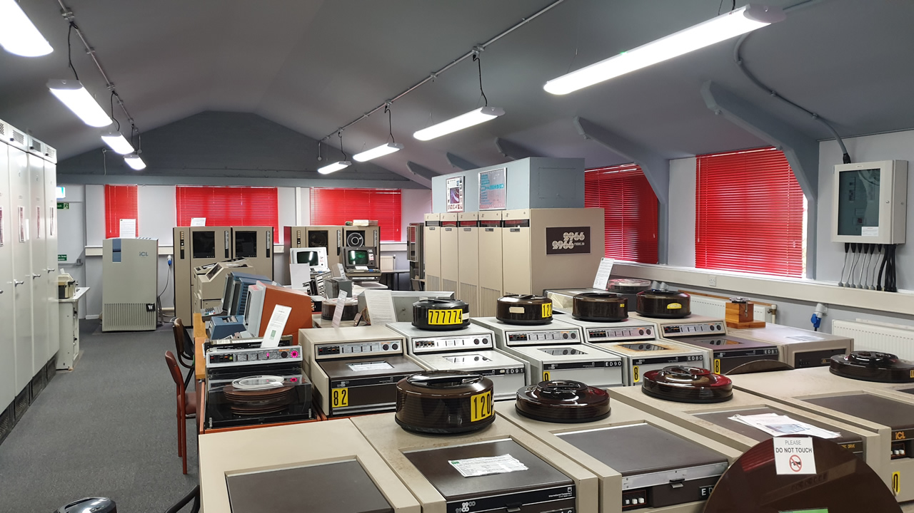
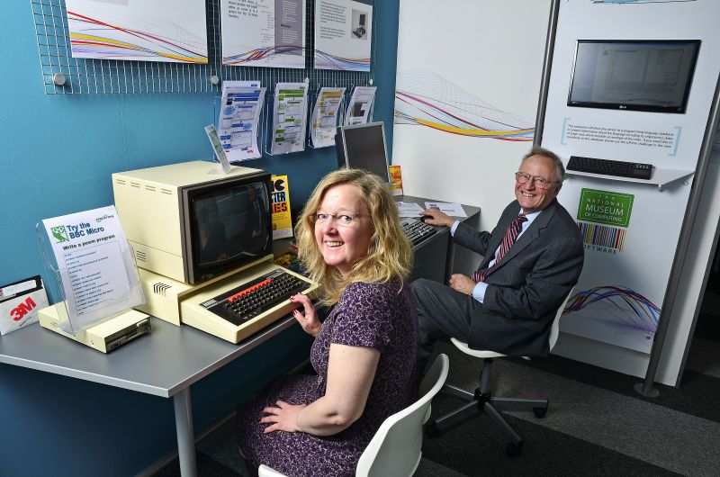

Computers
Visit
Support
Contact

Your visit
The museum is open today
The museum is not open tomorrow
The museum is open on Friday
The museum is open on Saturday
24h
Thu 28
13:00
Around the Museum
Map


The museum is open today
The museum is not open tomorrow
The museum is open on Friday
The museum is open on Saturday
24h
13:00